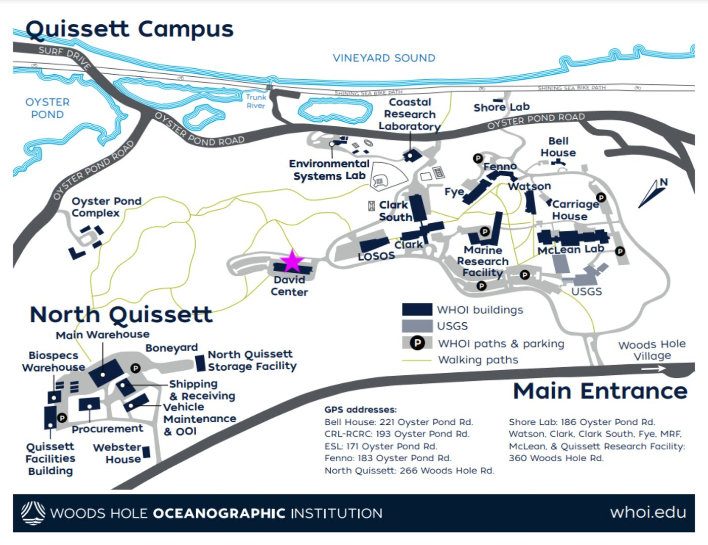
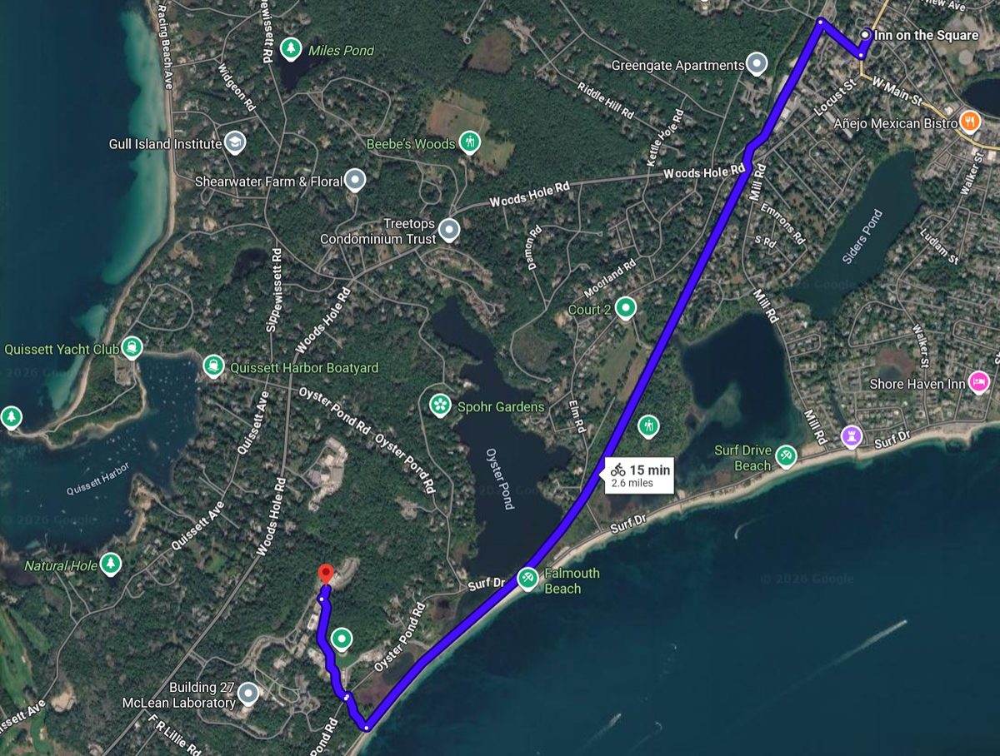
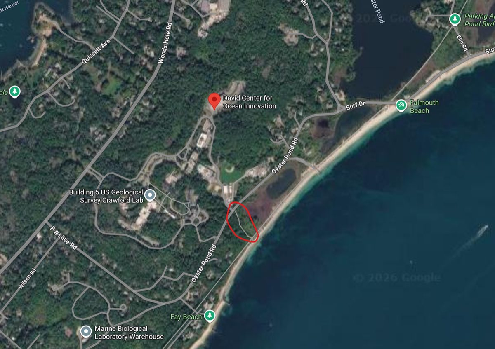

Getting Here
The workshop meets in the Social Hub of the David Center for Ocean Innovation on WHOI's Quissett Campus in Woods Hole. Demonstrations and the hands-on sessions are in WHOI's DeepTech facility, in the same building.
GPS apps such as Google Maps find it by searching “David Center for Ocean Innovation” (open in Google Maps).

By Car
There is ample parking at the David Center.
Walking or Biking from Falmouth
The David Center is about 2.6 miles from downtown Falmouth along the Shining Sea Bikeway (about 50 minutes on foot, 15 minutes by bike).
From Main Street, take Depot Ave away from the main road to the Shining Sea Bikeway and turn left. Follow the bikeway until it has run along the seashore for a while and you pass a parking lot on your right. Then look for a small gravel path on the right; it leads to WHOI's Quissett Campus. Follow the campus road uphill to the David Center.

